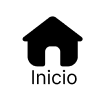

<ion-header>
  <ion-toolbar>
    <div style="display: flex; align-items: flex-end">
      
      <ion-title size="small" align = "right">Prestador</ion-title>
    </div>
    
  </ion-toolbar>
</ion-header>

<ion-content>
    
  <div>
    
  </div>
  
  
  <div align="center" style= "padding-top:10px; font-size:medium;"> 
    <p> Bem vindo prestador! </p> 
    <p> Bem vindo ao app de serviços</p> 
    <p> de limpeza mais amado do Brasil</p>
  </div>
  
    <div class="content">
      <ion-grid>
        <ion-row justify-content-center>
          <ion-col size="auto" >
            <ion-button shape="round" fill="outline" routerLink="/agendamentos">
              Administrar Agenda
            </ion-button>
          </ion-col>
        </ion-row>
        <ion-row justify-content-center>
          <ion-col size="auto"  style="padding: 0 10px;">
            <ion-button shape="round" fill="outline" routerLink="/finalizar-os">
              Finalizar Ordem de Serviço
            </ion-button>
          </ion-col>
        </ion-row>
        <ion-row justify-content-center>
          <ion-col size="auto"  style="padding: 0 10px;">
            <ion-button shape="round" fill="outline" routerLink = "/home">
              Perfil
            </ion-button>
          </ion-col>
        </ion-row>
      </ion-grid>
    </div>
</ion-content>

<ion-footer class = "footer"> 
  <ion-toolbar> 
    <div>
      <ion-grid>
        <ion-row justify-content-center>
            <ion-col size="auto" style="padding: 0 5px;">
              <ion-button fill="outline" routerLink ="/home" >Home</ion-button>
              
              
              
              
            </ion-col>
        </ion-row>
      </ion-grid>
    </div>
  </ion-toolbar>
</ion-footer>
